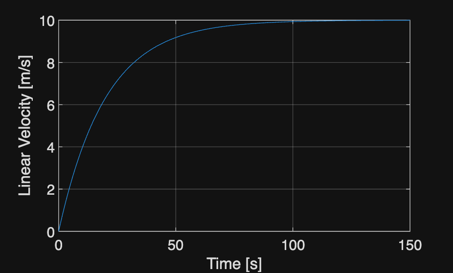
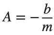
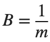
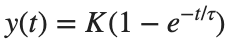

System Modeling · Lesson
English translation
Execution conditions
MATLAB · Control System Toolbox
Place the measurement file step_measurements.csv in the same folder as the script. The code downloads it if it is missing.
To obtain positive gain and time constant, estimate their logarithms using fminsearch.
Topics covered
Use the model to determine whether changing mass or resistance affects the transient response, the steady-state value, or both.
Overall workflow
Physical equations and units → state-space model → measured response → coefficient estimation and residuals
Choosing inputs and states from physical equations
In the cruise model , the input is force, and the state and output are velocity.

,
. For constant force, the final velocity is and the time constant is .Increasing mass leaves the final velocity unchanged but makes the velocity change more slowly.
Checking the model against measurements
In the unit-step response

, K is the steady-state value, and τ is the time to reach approximately 63.2% of that value. Fit this equation to the measured response to estimate both parameters.The first 3 s of this example capture only the rising response. Compare how much the estimated final value and time constant change when the 15 s record is also used.
Worked example
kg, N·s/m, force 500 N. The state and output are velocity [m/s].
%% Worked example
m=1000; b=50; force=500;
G=ss(-b/m,1/m,1,0); t=linspace(0,150,1501)';
[v,tm]=step(force*G,t); figure; plot(tm,v);
xlabel('Time [s]'); ylabel('Linear Velocity [m/s]'); grid on
Official documentation and data
Reference example
View more examples